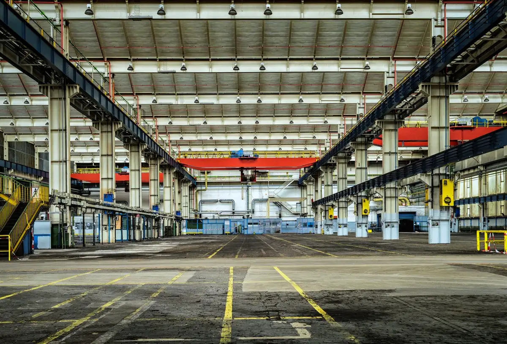

Story
Made with a factory in Dongguan, and signed with our own name.
Shanyue 山月 is demi-fine gold and lab-grown diamonds. The mountains stay in the name. The moon is the piece you put on again tomorrow. This page is a demo, and every year, name, and process figure below is marked sample.

Sample 示例
Dongguan factory 东莞工厂
Casting, setting, and a light vermeil plate happen in Dongguan, Guangdong. The photograph is a stand-in hall, not our floor, and it is labelled sample for that reason. Sample figures: the bench opened in 2016, and 12 people set stones there.
Why these materials
Vermeil is sterling silver with a gold plate, thick enough for daily wear if you keep it off the chlorine. The diamonds are lab-grown. We use them because the stone can be small and still bright, without a mined-diamond story we cannot stand behind.
How a piece moves
Sample process. The sequence is illustrative.
1. Draw
A setting is drawn to the stone, not the other way around.
2. Print
A wax is printed and checked before any metal is poured.
3. Set
Stones are set by hand on the Dongguan bench.
4. Plate
Sample figure: vermeil plate at 2.5 µm.
5. Polish
A last polish, then the piece is packed.
People on the bench
Sample cards. No real names.
Bench
Sample. Setting small stones, Dongguan.
Polish
Sample. Final finish before packing.
Plate
Sample. Vermeil bath and rinse.
“We wanted a diamond you could wear on a Tuesday.”
Sample founder note. No biography, no award, no press logo.
What we promise
Free shipping over $80. Thirty-day returns on pieces that are not engraved. Engraving takes 7–10 days and cannot be returned. A one-year warranty covers a broken clasp or a lost stone.